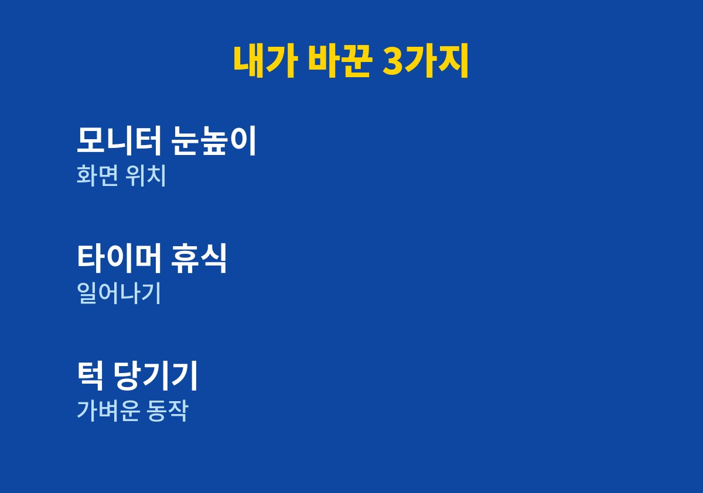
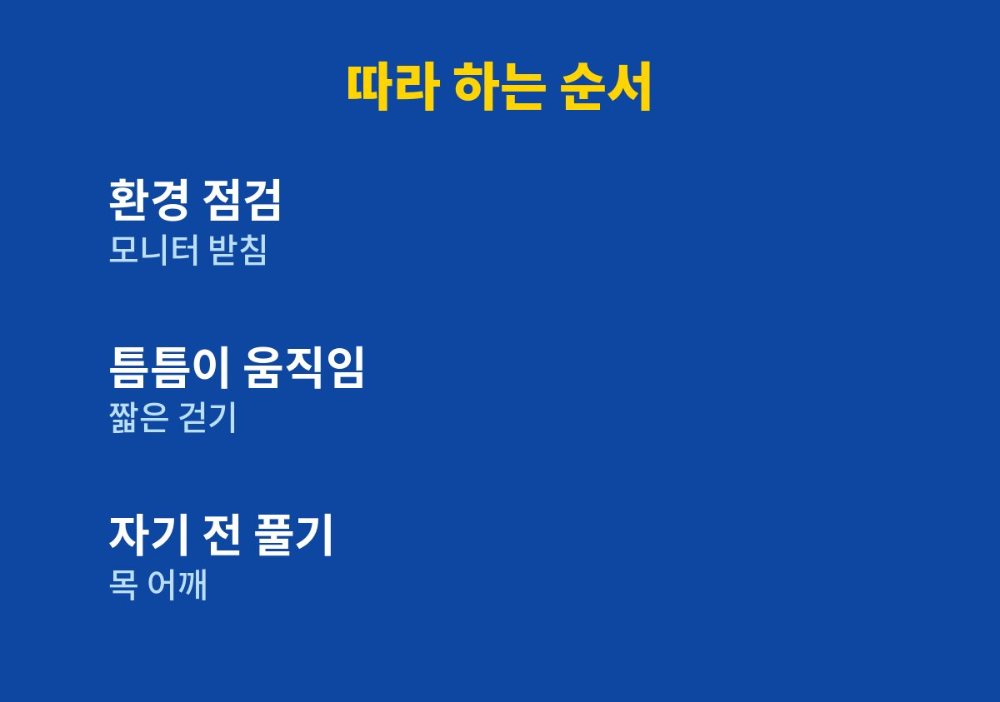

하루 종일 모니터 앞에서 일하다가 목과 어깨가 뻣뻣해진 사람이라면 아래 순서대로 확인하면 된다.
온라인 쇼핑몰을 혼자 운영하며 두 아이를 키우는 내가 직접 바꿔본 습관만 정리했다.
병원 치료를 대신하는 글은 아니며 일상에서 할 수 있는 관리에 초점을 맞췄다.
노트북과 휴대폰을 오래 보면 고개가 자연스럽게 앞으로 빠진다.
머리는 생각보다 무거워서 앞으로 나올수록 목과 어깨가 더 힘들어진다.
이런 자세가 오래 쌓이면 뻣뻣함과 두통으로 이어질 수 있다고 알려져 있다.
그래서 통증이 생긴 뒤에 풀어 주기보다 평소 자세를 먼저 살피는 것이 중요하다.
주문이 몰리는 날이면 나도 모르게 화면 쪽으로 얼굴을 들이밀고 있었다.
퇴근 후 아이를 안아 올릴 때 어깨가 뻐근해서 그제야 문제를 느꼈다.
이 글을 읽는 사람도 비슷한 하루를 보내고 있을 가능성이 크다.
그래서 거창한 처방보다 지금 책상에서 바로 할 수 있는 것부터 찾기로 했다.
책상 높이와 모니터 위치를 확인해 보니 화면이 눈보다 한참 낮았다.
노트북을 책상에 그대로 올려놓고 하루 대부분을 고개 숙여 일하고 있었다.
의자에 앉는 자세도 등이 말려 엉덩이가 앞으로 빠져 있었다.
자세를 사진으로 찍어 보니 생각보다 훨씬 구부정해서 놀랐다.
한 번 앉으면 두세 시간을 움직이지 않고 일하는 날이 많았다.
휴대폰으로 주문을 확인하면서 걸을 때도 고개를 숙이고 있었다.
결국 문제는 근력이 아니라 같은 자세로 오래 머무는 습관이라고 판단했다.

먼저 모니터를 눈높이에 맞추고 노트북은 받침 위에 올렸다.
이렇게 하면 의지에 기대지 않고도 고개가 덜 숙여진다는 점이 마음에 들었다.
팔꿈치가 몸 옆에서 편하게 굽혀지도록 의자 높이도 조정했다.
타이머를 맞춰 정해 둔 간격마다 일어나 어깨를 돌리고 잠깐 걸었다.
거창한 운동 대신 턱을 가볍게 당기고 어깨를 뒤로 여는 동작만 반복했다.
아이와 놀 때도 바닥에 앉아 허리를 펴는 자세를 의식했다.
이 정도는 일하는 중에도 끊기지 않고 할 수 있어서 꾸준히 이어졌다.
바꾼 내용을 표로 정리하면 아래와 같다.
| 상황 | 이전 | 바꾼 뒤 |
|---|---|---|
| 화면 위치 | 눈보다 낮은 곳 | 눈높이 근처 |
| 앉는 시간 | 두세 시간 연속 | 타이머마다 일어남 |
| 휴대폰 | 고개 숙여 확인 | 눈앞으로 들어 올려 확인 |
표처럼 환경과 습관을 하나씩 바꾸는 것이 부담이 적었다.
한꺼번에 바꾸기보다 가장 쉬운 줄부터 시작하는 것을 추천한다.
아래 순서대로 하나씩 해 보면 된다.
1. 모니터 상단을 눈높이에 맞추고 노트북은 받침 위에 올린다.
2. 타이머로 간격을 정해 일어나 어깨를 돌리고 짧게 걷는다.
3. 턱을 가볍게 당기고 어깨를 뒤로 여는 동작을 하루 몇 번 반복한다.
4. 휴대폰은 얼굴 쪽으로 들어 올려 고개를 덜 숙이고 본다.
5. 잠들기 전 목과 어깨를 천천히 풀며 하루 자세를 돌아본다.
동작 중 통증이 심해지거나 저림이 나타나면 바로 멈추는 것이 좋다.
처음부터 완벽하게 하려 하기보다 한 가지씩 늘려 가는 편이 오래 간다.
통증을 참으며 버티는 방식은 내 기준에서 좋은 습관이 아니었다.
컨디션이 좋은 날과 나쁜 날의 기준을 따로 두지 않고 같은 루틴을 지켰다.
기록을 남기면 변화가 보여서 동기 부여에도 도움이 된다.

자세를 바꾼 뒤 퇴근 무렵의 뻐근함이 이전보다 덜하다고 느꼈다.
물론 개인차가 있어서 모든 사람에게 같은 결과가 나온다고 말할 수는 없다.
팔 저림이나 심한 두통, 오래가는 통증이 있다면 참지 말고 전문의 상담을 받는 것이 좋다.
작은 환경 변화만으로도 하루의 피로가 달라질 수 있으니 오늘 모니터 높이부터 확인해 보길 권한다.
※ 2026년 기준 개인 경험과 공식 기준을 바탕으로 정리한 일반 건강 정보이며, 증상이 계속되거나 지병이 있다면 전문의와 상담하시길 바란다.